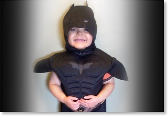
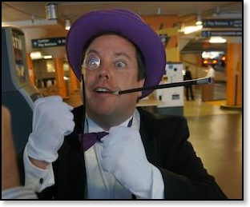
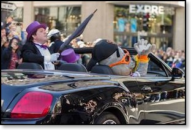
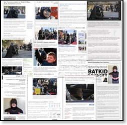

<!DOCTYPE html PUBLIC "-//W3C//DTD XHTML 1.0 Strict//EN" "http://www.w3.org/TR/xhtml1/DTD/xhtml1-strict.dtd">
<html xmlns="http://www.w3.org/1999/xhtml">

<!-- | - - - - - - - - - - - - - - - - - - - - - - - - - - - - - - - - - - - - - - - - - - - - - - - - - - - - -

Version: 1.2

- - - - - - - - - - - - - - - - - - - - - - - - - - - - - - - - - - - - - - - - - - - - - - - - - - - - - | -->

	<head>
		<title>mikejutan.com :: Side Projects :: SF Make-A-Wish Batkid</title>
		
<!-- Meta -->
		<meta http-equiv="Content-Type" content="text/html; charset=utf-8" />
		<meta name="generator" content="RapidWeaver" />
		<link rel="icon" href="http://www.mikejutan.com/favicon.ico" type="image/x-icon" />
		<link rel="shortcut icon" href="http://www.mikejutan.com/favicon.ico" type="image/x-icon" />
		<link rel="apple-touch-icon" href="http://www.mikejutan.com/apple-touch-icon.png" />
		
		
<!-- CSS -->
		<link rel="stylesheet" type="text/css" media="screen" href="../../rw_common/themes/avante/styles.css" />
		<link rel="stylesheet" type="text/css" media="screen" href="../../rw_common/themes/avante/css/css3/style.css3.css" />
		<link rel="stylesheet" type="text/css" media="screen" href="../../rw_common/themes/avante/css/prettyPhoto.css" />
		<link rel="stylesheet" type="text/css" media="screen" href="../../rw_common/themes/avante/colourtag-page30.css" />
		<link rel="stylesheet" type="text/css" media="print" href="../../rw_common/themes/avante/print.css" />
		
<!--[if lt IE 9]>
        <link rel="stylesheet" type="text/css" media="all" href="../../rw_common/themes/avante/css/style.ie.css" />
<![endif]-->


<!-- JavaScript : Include and embedded version -->
		<script type="text/javascript" src="../../rw_common/themes/avante/js/jquery.min.js"></script>
		<script type="text/javascript" src="../../rw_common/themes/avante/js/jquery.prettyPhoto.js"></script>
		<script type="text/javascript" src="../../rw_common/themes/avante/js/custom.js"></script>
		<script type="text/javascript" src="../../rw_common/themes/avante/js/rwget.js"></script>
		<script type="text/javascript" src="../../rw_common/themes/avante/javascript.js"></script>
		<script charset="utf-8">
		RwSet = {
			pathto: "../../rw_common/themes/avante/javascript.js",
			baseurl: "http://www.mikejutan.com/"
		};
		</script>

<!-- JavaScript & CSS : Style Variations -->
		<script type="text/javascript" src="../../rw_common/themes/avante/js/extracontent.js"></script>
		<script type="text/javascript" src="../../rw_common/themes/avante/js/facebook.js"></script>
		<link rel="stylesheet" type="text/css" media="screen" href="../../rw_common/themes/avante/css/bg_images/bg_vertical.css" />
		<link rel="stylesheet" type="text/css" media="screen" href="../../rw_common/themes/avante/css/font_face/expletussans-regular.css" />
		<link rel="stylesheet" type="text/css" media="screen" href="../../rw_common/themes/avante/css/font_family/lucida-grande.css" />
		<link rel="stylesheet" type="text/css" media="screen" href="../../rw_common/themes/avante/css/width/960.css" />
		<link rel="stylesheet" type="text/css" media="screen" href="../../rw_common/themes/avante/css/rounded_corners/round_6px.css" />
		<link rel="stylesheet" type="text/css" media="screen" href="../../rw_common/themes/avante/css/top_menu/float_left.css" />
		<link rel="stylesheet" type="text/css" media="screen" href="../../rw_common/themes/avante/css/top_menu/fs_13.css" />
		<link rel="stylesheet" type="text/css" media="screen" href="../../rw_common/themes/avante/css/main_content/fs_13.css" />
		<link rel="stylesheet" type="text/css" media="screen" href="../../rw_common/themes/avante/css/sidebar/sidebar_right.css" />
		<link rel="stylesheet" type="text/css" media="screen" href="../../rw_common/themes/avante/css/side_content/fs_11.css" />
		<link rel="stylesheet" type="text/css" media="screen" href="../../rw_common/themes/avante/css/bottom_content/fs_12.css" />
		<link rel="stylesheet" type="text/css" media="screen" href="../../rw_common/themes/avante/css/banner_height/hide_banner.css" />
		<link rel="stylesheet" type="text/css" media="screen" href="../../rw_common/themes/avante/css/stock/banner_1.css" />
		
		<style type="text/css" media="all">#tophead .floatclear.center {
padding-top:15px;
padding-bottom:10px;
}</style>

		
		
		

	<!-- Start Google Analytics -->
<script type="text/javascript">

  var _gaq = _gaq || [];
  _gaq.push(['_setAccount', 'UA-957803-2']);
  _gaq.push(['_setDomainName', '.mikejutan.com']);
  _gaq.push(['_trackPageview']);

  (function() {
    var ga = document.createElement('script'); ga.type = 'text/javascript'; ga.async = true;
    ga.src = ('https:' == document.location.protocol ? 'https://ssl' : 'http://www') + '.google-analytics.com/ga.js';
    var s = document.getElementsByTagName('script')[0]; s.parentNode.insertBefore(ga, s);
  })();

</script><!-- End Google Analytics -->
</head>
		<body>
		<div id="tophead">
			<div class="center floatclear">
				<div id="logo"><a href="http://www.mikejutan.com/"></a></div>
				<h1><a href="http://www.mikejutan.com/"></a> <span></span></h1>
			</div>
		</div>
		<hr class="hide" />
		<div id="wrap">
			<div id="wrap-nav">
				<div id="navigation" class="jqueryslidemenu floatclear">
					<ul><li><a href="../../" rel="self">Home</a></li><li><a href="../../travel/" rel="self">Travel</a><ul><li><a href="../../travel/whereivebeen/" rel="self">Where I've Been</a></li><li><a href="../../travel/honeymoon/" rel="self">Honeymoon</a></li><li><a href="../../travel/maui2017/" rel="self">Maui 2017</a></li><li><a href="../../travel/vancouver2016/" rel="self">Vancouver 2016</a></li><li><a href="../../travel/portland2016/" rel="self">Portland 2016</a></li><li><a href="../../travel/israel2016/" rel="self">Israel 2016</a></li><li><a href="../../travel/bermuda2016/" rel="self">Bermuda 2016</a></li><li><a href="../../travel/london2016/" rel="self">London 2016</a></li><li><a href="../../travel/qm2015/" rel="self">NYC/Queen Mary 2/Oxford/Paris 2015</a></li><li><a href="../../travel/london2015/" rel="self">Scotland/London/Israel 2015</a></li><li><a href="../../travel/israel2014/" rel="self">Israel 2014</a></li><li><a href="../../travel/scotland2014/" rel="self">Scotland 2014</a></li><li><a href="../../travel/china2014/" rel="self">China 2014</a></li><li><a href="../../travel/texas2013/" rel="self">Texas 2013</a></li><li><a href="../../travel/seattle2013/" rel="self">Seattle 2013</a></li><li><a href="../../travel/peru2012/" rel="self">Peru/Brazil/Argentina 2012</a></li><li><a href="../../travel/iceland2011/" rel="self">Iceland/Europe 2011</a></li><li><a href="../../travel/singapore2010/" rel="self">Singapore/Malaysia 2010</a></li><li><a href="../../travel/japan2010/" rel="self">Japan/South Korea 2009</a></li><li><a href="../../travel/southafrica2008/" rel="self">South Africa 2008</a></li><li><a href="../../travel/europe2007/" rel="self">Europe 2007</a></li></ul></li><li><a href="../../work/" rel="self">Work</a><ul><li><a href="../../work/ilm/" rel="self">Industrial Light & Magic</a></li><li><a href="../../work/resume/" rel="self">Resume (CV)</a></li><li><a href="../../work/publications/" rel="self">Publications</a></li><li><a href="../../work/patents/" rel="self">Patents</a></li></ul></li><li><a href="../../sideprojects/" rel="self" class="currentAncestor">Side Projects</a><ul><li><a href="./" rel="self" class="current">Batkid Begins & Make-A-Wish</a></li><li><a href="../../sideprojects/olpc/" rel="self">One Laptop Per Child</a></li><li><a href="../../sideprojects/imenurkey/" rel="self">iMenurkey</a></li><li><a href="../../sideprojects/gymninja/" rel="self">Gym Ninja</a></li><li><a href="../../sideprojects/imenorah/" rel="self">iMenorah</a></li><li><a href="../../sideprojects/826valencia/" rel="self">826 Valencia & inspirations</a></li></ul></li><li><a href="../../play/" rel="self">Play</a><ul><li><a href="../../play/music/" rel="self">Music</a></li><li><a href="../../play/raytracer/" rel="self">Raytracer & 3D</a></li></ul></li><li><a href="../../about/" rel="self">About Mike</a><ul><li><a href="../../about/bio/" rel="self">Biography</a></li><li><a href="../../about/media/" rel="self">Media Exposure</a></li></ul></li><li><a href="../../photos/" rel="self">Photography</a></li><li><a href="http://jutanclan.blogspot.com" rel="external">Blog</a></li></ul>
				</div><!-- navigation -->
			</div>
			<hr class="hide" />
			<div id="main">
				<div id="header">
					<div id="banner">
						<div id="extraContainer1"><!--extra user content renders here--></div>
					</div>
				</div><!-- header -->
				<hr class="hide" />
				<div id="content" class="floatclear">
					<div id="primary-content">
						<h2>Batkid Begins & SF Make-A-Wish: Batkid!</h2>I was honoured to play the part of &ldquo;The Penguin&rdquo; supervillian in the SFBatkid Make-A-Wish caper in San Francisco on November 15, 2013. It was a truly incredible day, beyond words and comparison.<br /><br />This was a moment I will always remember. Young Miles, armed with the city of San Francisco behind him, gave the world of the strongest message of optimism and positivity that I have ever seen. <br /><br /><br /><h2>Some background on the event</h2>(Quoted from SF Make-A-Wish <a href="http://sf.wish.org/wishes/wish-stories/i-wish-to-be/wish-to-be-batkid" rel="external">website</a>) Miles may only be 5 years old but he is fighting a very adult battle, one that we hope he will win. Miles has leukemia. He is a bright, positive, little boy who finds inspiration in super-heroes. When we interviewed Miles for a wish, he surprised even his parents: Miles wants to be Batkid!<br /><div class="image-right"></div><br />The day will begin with a breaking news story. San Francisco&rsquo;s Police Chief will ask if anyone knows the whereabouts of Batkid. The city needs his help to fight crime and capture villains! Our little Batkid, along with Batman, will be ready to answer the call!<br /><br />After rescuing a damsel-in-distress from the Hyde Street cable-car tracks in Nob Hill, then capturing the Riddler in the act of robbing a downtown vault, Batkid will enjoy lunch at the Burger Bar, near Union Square. After lunch, he will get a special message from the Police Chief and go to the window where he will look down and see a huge crowd of volunteers jumping up and down pleading for Batkid&rsquo;s help. Why? The Penguin has just kidnapped a famous San Francisco mascot (Lou Seal)! The batmobile will be visible on Union Square, (a convertible offering a view of the crime in progress), and the chase will be on!<br /><div class="image-left"></div><br />After apprehending the Penguin, Batkid will make a final stop at City Hall where the Mayor of San Francisco, Ed Lee, along with the Police Chief, will congratulate him on his daring feats of justice and present him with a key to the city. We hope to have a huge crowd of volunteers and donors there to cheer him on and thank our Batkid!<br /><br /><br /><br /><h2>How I got involved</h2>Making a wish come true starts with one person saying &lsquo;Yes&rsquo;. I wrote up a long blog post with behind-the-scenes photos of Batkid preparation and Batkid day, and also wrote details about how I got involved in this unbelievable event.<br />Check it out here: <a href="http://jutanclan.blogspot.com/2013/11/the-day-batkid-defeated-me-and.html" rel="external">The day Batkid defeated me, and rekindled hope in humankindness</a><br /><br /><h2>How you can get involved</h2>Make-A-Wish is an incredible organization. Check out their site for more <a href="http://wish.org/ways-to-help" rel="external">details on how to get involved</a> in your local area. Whatever skills you have, they will surely be useful!<br /><br /><h2>Press (before the event)</h2>After initial posts on San Francisco Chronicle and SFist, Make-A-Wish Bay Area&rsquo;s agenda of capers to turn SF into Gotham City for Miles went viral. This secured over 16,000 RSVPs and encouragement for Miles coming from all over the globe.<br /><br /><a href="http://blog.sfgate.com/stew/2013/11/01/s-f-to-be-transformed-into-gotham-city-for-5-year-olds-make-a-wish/" rel="external">San Francisco Chronicle</a> //  <a href="http://sfist.com/2013/10/30/make-a-wish_foundation_will_transfo.php" rel="external">SFist</a>, <a href="http://sfist.com/2013/11/01/heres_how_you_can_help_make_5-year-.php" rel="external">article 2</a> // <a href="http://www.huffingtonpost.com/2013/11/01/san-francisco-batman_n_4196585.html" rel="external">Huffington Post</a> // <a href="http://mashable.com/2013/11/11/batkid-make-a-wish/" rel="external">Mashable</a> // <a href="http://www.slashfilm.com/make-a-wish-will-turn-san-francisco-into-gotham-city-so-a-child-can-be-batman/" rel="external">Slashfilm</a> // <a href="http://jezebel.com/your-morning-cry-s-f-turned-into-gotham-for-5-year-ol-1456643255" rel="external">Jezebel</a> // <a href="http://www.reddit.com/r/sanfrancisco/comments/1pi3ti/make_a_wish_is_transforming_san_francisco_into/" rel="external">Reddit</a> // <a href="http://news.cnet.com/8301-17938_105-57610734-1/make-a-wish-to-turn-san-francisco-into-gotham-for-batkid/" rel="external">CNET</a> // <a href="http://www.ign.com/articles/2013/11/02/make-a-wish-foundation-plans-to-transform-san-francisco-into-gotham-city" rel="external">IGN</a> // <a href="http://www.nbcbayarea.com/news/local/Thousands-Helping-Transform-SF-Into-Gotham-City-to-Make-Boys-Wish-Come-True-231525591.html" rel="external">NBC Bay Area</a> // <a href="http://www.eonline.com/news/477306/san-francisco-will-transform-into-gotham-to-fulfill-batman-loving-5-year-old-s-make-a-wish" rel="external">E!Online</a> // <a href="http://www.avclub.com/articles/the-makeawish-foundation-will-turn-san-francisco-i,105189/" rel="external">A.V. Club</a> // <a href="http://abcnews.go.com/blogs/headlines/2013/11/san-francisco-to-transform-into-gotham-for-boys-batman-make-a-wish/" rel="external">ABC News</a> // <a href="http://www.today.com/moms/city-lets-5-year-old-batkid-chase-villains-part-wish-2D11582663" rel="external">Today</a> // <a href="http://now.msn.com/make-a-wish-to-transform-san-francisco-into-gotham" rel="external">MSN Now</a> // <a href="http://www.usatoday.com/story/news/nation/2013/11/06/san-francisco-gotham-make-a-wish/3451847/" rel="external">USA Today</a> // <a href="http://www.hollywoodreporter.com/heat-vision/boy-fight-crime-as-batkid-654112" rel="external">Hollywood Reporter</a> // <a href="http://www.nydailynews.com/news/national/cancer-victim-5-play-batman-san-fran-article-1.1505846" rel="external">New York Daily News</a> // <a href="http://metro.co.uk/2013/11/03/five-year-old-boy-battling-leukaemia-to-become-batman-for-the-day-in-real-life-gotham-city-4171379/" rel="external">Metro newspaper (London, UK)</a> // <a href="http://www.dailymail.co.uk/news/article-2486255/San-Francisco-transformed-Gotham-City-grant-year-old-cancer-victims-wish-Batman.html" rel="external">Daily Mail (UK)</a> // <a href="http://www.comicbookmovie.com/fansites/Comiccamcritic18/news/?a=89459" rel="external">ComicBookMovie.com</a> // <a href="http://comicsalliance.com/make-a-wish-child-batman-san-francisco-gotham-city/" rel="external">Comics Alliance</a> // <a href="http://www.boston.com/news/source/2013/11/make-a-wish_turns_san_francisco_into_gotham_city.html" rel="external">Boston.com</a><br />+ <a href="https://www.facebook.com/BatkidPhotos" rel="external">Batkid Photo Project on Facebook</a><br />+ tweets from: Ron Conway, Joe Montana, MC HAMMER, Jack Dorsey and Industrial Light & Magic!<br /><br /><h2>Notable coverage of the event</h2>This event turned into a worldwide positive phenomenon, with news from our fun little day in SF reaching 117 countries. More than 500,000 tweets, 1.8 Billion total potential Twitter impressions, and countless international newspaper, TV, radio and web press rounded out the sheer insanity/world-wide joy that was Batkid day in SF. There are literally hundreds of thousands of articles I could link to here, but here&rsquo;s just a few specifically notable ones.<br /><br /><a href="http://www.polygon.com/2013/12/14/5208764/batman-eric-johnston-batkid-make-a-wish-san-francisco" rel="external">Polygon</a> // <a href="http://www.buzzfeed.com/ryanhatesthis/everything-you-need-to-know-about-the-make-a-wish-foundation" rel="external">Buzzfeed</a> // <a href="http://mashable.com/2013/11/15/batkid-begins/" rel="external">Mashable</a>: &ldquo;Batkid Saves Gotham, Captivates Internet&rdquo; // <a href="http://mashable.com/2013/11/15/batkid-instagrams/" rel="external">Mashable</a>: &ldquo;20 Batkid Instagram Photos That Will Make You Whole Again&rdquo; // <a href="http://mashable.com/2013/11/18/batkid-numbers/" rel="external">Mashable</a>: &ldquo;How Batkid Conquered the World, by the Numbers&rdquo; //  <a href="http://mashable.com/2013/11/15/batkid-beyond/" rel="external">Mashable</a>: &ldquo;Batkid Was Beautiful &mdash; Let's Keep It Going&rdquo; // <a href="http://en.wikipedia.org/wiki/Batkid" rel="external">Wikipedia</a><br />+ many more, including: <span style="font-size:13px; "><em>CNN, Fox News, The Guardian, Washington Post, San Francisco Chronicle, LA Times, IGN, Yahoo! News, CBS News, Mashable, WIRED, Hollywood Reporter, NPR, Huffington Post, The Telegraph, Gawker, USA Today, New York Times, Jezebel, Business Insider, ABC News, World News with Diane Sawyer, CityNews, BBC, The Times of India, TIME, CNET, TMZ, Good Morning America</em></span><br />+ tweets from: President Barack Obama, Adam West, Val Kilmer, Christian Bale, Ben Affleck, Michael Keaton, Hans Zimmer<br /><br />Here&rsquo;s a look at some of the international press:<br /><a href="../../../resources/collage.jpg" rel="prettyPhoto" title="Batkid International Press"></a><br /><br /><br /><br /><br /><br /><br /><br /><br /><br /><br /><br /><br /><h2>President Barack Obama&rsquo;s Shout-out to Miles</h2>The entire bus of Make-A-Wish volunteers all collectively passed out <a href="https://www.politico.com/video/2013/11/obamas-message-for-batkid-005180">when we watched this</a>. Incredible.<br /><br /><h2>Google Zeitgeist 2013 Video</h2>EJ (&ldquo;Batman&rdquo;) and I visited Google&rsquo;s HQ in Mountain View, California for an early screening of the Google Zeitgeist video. Google finished off their &ldquo;Here&rsquo;s to 2013&rdquo; year-in-review video with a couple of clips of Batman and Batkid, to honour the event&rsquo;s worldwide social and cultural significance.<br /><br /><iframe width="640" height="360" src="https://www.youtube.com/embed/Lv-sY_z8MNs" frameborder="0" allowfullscreen></iframe><br /><br /><h2>Batkid Begins: Documentary Film</h2>A few months after Batkid Day, Make-A-Wish chose documentary filmmaker Dana Nachman to capture the spirit that went into the big wish. The Make-A-Wish crew and some of us &ldquo;cast&rdquo; members spoke on a <a href="http://jutanclan.blogspot.com/2014/07/batkid-movie-panel-at-san-diego-comic.html" rel="external">San Diego Comic-Con panel</a> to help promote the film and the fundraising efforts. Following this event, the non-profit project was posted to crowdfunding site Indiegogo, <a href="https://www.indiegogo.com/projects/batkid-begins" rel="external">where it raised $109,630</a>.  These funds will cover post-production, and all proceeds from the film will be donated to <a href="http://mashable.com/2013/11/22/batkid-fund/" rel="external">The Batkid Fund</a>.<br /><br />After Comic-Con, this trailer was released and was featured on Mashable, Today, ABC News, Entertainment Weekly, MSNBC, MTV, The Hollywood Reporter, Variety, HLN, PBS, Nerdist, Fast Company, E! Online, The Insider and more. Business Insider <a href="http://www.businessinsider.com/batkid-begins-documentary-2014-8" rel="external">posted this interview I did</a>. I am so excited to be a part of this project, and I hope that it further inspires people to volunteer. When people see the joy we all found by participating in the Batkid event, I hope it encourages further community service.<br /><br /><iframe width="640" height="360" src="https://www.youtube.com/embed/Zyai_GmxXF8" frameborder="0" allowfullscreen></iframe><br /><br /><h2>Batkid: 1 Year Later</h2>Ama Daetz (reporter from ABC7 News San Francisco Bay Area) interviewed EJ and Me discussing our thoughts about the impact of Batkid, 1 year later.<br /><br /><iframe src="https://abc7news.com/video/embed?pid=394881" width="640" height="360" allowFullScreen frameBorder="0"></iframe><br /><br /><h2>Batkid Begins: San Francisco Film Society classroom guide</h2>The wonderful SFFS created classroom materials for students to read and respond to the themes in Batkid Begins. <a href="../../../resources/Batkid_Begins_guide.pdf" rel="external">Download the Classroom Guide here</a> (recommended for Grades 5-12).<br /><br /><h2>Batkid Begins, a Warner Bros./New Line Film</h2>Following the USA premiere at the Slamdance Film Festival in Park City, Utah, it was announced that Warner Bros./New Line Cinema would be distributing the film. As part of the marketing for the film, we spoke at Q&As and pre-screenings of the film, I <a href="http://www.imdb.com/video/imdb/vi4196249625" rel="external">filmed an interview at Warner Bros. Studios Leavesdon</a> (London, UK) for the press kit, and we shared our story about our little-wish-day-turned-landmark-local-volunteerism-day in detail at a variety of media outlets in NYC, LA and SF.<br /><br />These included: <a href="http://live.huffingtonpost.com/r/segment/batkid-begins-film/557075c702a760b0770001b5" rel="external">HuffPostLive</a>, SIRIUS XM Radio, Metro, <a href="http://features.aol.com/video/watch-live-filmmaker-dana-nachman-incredible-story-batkid-begins" rel="external">AOL BUILD</a>, <a href="http://www.mtv.com/news/2195029/batkid-begins-movie/" rel="external">MTV News,</a> <a href="http://collider.com/batkid-begins-interview-turning-the-incredible-event-into-an-inspiring-documentary/" rel="external">Collider</a>, <a href="http://video.foxnews.com/v/4292408123001/how-the-world-cheered-on-batkid/?#sp=show-clips" rel="external">FOX News,</a> Q104.3 Clear Channel, CBS Westwood One Radio, SF DocFest, <a href="http://www.sfexaminer.com/holy-humanity-batkid-begins-a-feel-good-experience/" rel="external">San Francisco Examiner</a>, KCET, IDA, <a href="http://www.latimes.com/entertainment/movies/la-et-mn-batkid-begins-20150626-story.html" rel="external">LA Times</a>, HitFix.com, <a href="http://variety.com/2015/scene/vpage/batkid-begins-reveals-boy-behind-the-mask-team-behind-the-boy-1201523136/" rel="external">Variety</a>, ABC, Associated Press, <a href="http://www.patheos.com/blogs/sisterrosemovies/2015/06/batkid-begins-a-wish-with-a-life-of-its-own/" rel="external">Sister Rose at the Movies</a>, People Magazine, <a href="http://www.myfoxla.com/story/29352278/dana-nachman-patricia-wilson-mike-jutan-talk-batkid-begins" rel="external">Good Day LA</a>, KFOG-FM, KGO-AM, <a href="http://www.huffingtonpost.com/zaki-hasan/interview-dana-nachman-pa_b_7727436.html" rel="external">Huffington Post</a>, <a href="http://waytooindie.com/interview/batkid-begins-filmmaker-and-batkid-organizers-on-making-dreams-come-true/" rel="external">WayTooIndie</a>, KQED, Academy of Art News, <a href="http://www.nbcbayarea.com/news/local/Batkid-Begins-Documentary-Premieres-in-San-Francisco-309650691.html" rel="external">NBC Bay Area</a>, <a href="http://abc7news.com/society/batkid-begins-premieres-in-san-francisco-/803367/" rel="external">ABC7</a>, <a href="http://canadaam.ctvnews.ca/video?clipId=653915&playlistId=1.2462997&binId=1.815911&playlistPageNum=1&binPageNum=1" rel="external">CTV Canada AM</a>, <a href="http://guff.com/guff-interview-dana-nachman-patricia-wilson-and-mike-jutan-of-batkid-begins" rel="external">Guff</a>, as well as photography by Getty Images and Wireimage.<br /><br />Here is the official trailer for Batkid Begins (USA initial release date June 26, 2015)<br /><iframe width="640" height="360" src="https://www.youtube.com/embed/JMUw4Ndpbdw" frameborder="0" allowfullscreen></iframe>
					</div><!-- primary-content -->
					<hr class="hide" />
					<div id="secondary-content">
						<h3>Learn more and get involved</h3><!-- sidebar-header -->
							<div id="myExtraContent2">
	<h2>Connect with me via Social Networks</h2>
		<div id="social">
			<a href="http://www.facebook.com/jutanclan"></a>
			<a href="http://www.linkedin.com/in/mikejutan"></a>
			<a href="http://jutanclan.blogspot.com"></a>
			<a href="http://www.twitter.com/jutanclan"></a>
			<a href="http://www.imdb.com/name/nm2867705/"></a>
			<a href="http://www.youtube.com/user/jutanclan"></a>
			<a href="https://plus.google.com/112042576256401918255/posts"></a>
			<a href="http://steepster.com/mjutan"></a>
			<a href="http://jutanclan.yelp.com"></a>
			<a href="http://www.strava.com/athletes/mjutan"></a>
			<a href="http://jutanclan.blogspot.com/feeds/posts/default"></a>
		</div>
</div><!-- #myExtraContent -->
<a href="http://sf.wish.org" rel="external">Make-A-Wish&reg; Greater Bay Area<br /></a><a href="http://wish.org" rel="external">Make-A-Wish&reg; National Website (USA)</a><a href="http://sf.wish.org" rel="external"><br /></a><a href="https://twitter.com/sfwish" rel="external">On Twitter: @sfwish</a><br /><a href="http://sf.wish.org/wishes/wish-stories/i-wish-to-be/wish-to-be-batkid" rel="external">Miles' Wish: To Be Batkid</a><br /><br />My blog post, following the Batkid wish day<br /><a href="http://jutanclan.blogspot.com/2013/11/the-day-batkid-defeated-me-and.html" rel="external">Mike Jutan's World: The day Batkid defeated me, and rekindled hope in humankindness</a><br /><br />Batkid Begins documentary film (2015)<br /><a href="http://www.batkidbegins.com" rel="external">http://www.batkidbegins.com</a><!-- sidebar content you enter in the page inspector -->
							 <!-- sidebar content such as the blog archive links -->
					</div><!-- secondary-content -->
					<hr class="hide" />
				</div><!-- content -->
			</div>
			<div id="bottom">
				<div id="extraContainer2" class="floatclear"><!--extra user content renders here--></div>
			</div>
			<hr class="hide" />
			<div id="footer">
				<ul><li><a href="../../">Home</a>&nbsp;&raquo;&nbsp;</li><li><a href="../../sideprojects/">Side Projects</a>&nbsp;&raquo;&nbsp;</li><li><a href="./">Batkid Begins & Make-A-Wish</a>&nbsp;&raquo;&nbsp;</li></ul>
				&copy; 2011-2022 Mike Jutan <a href="#" id="rw_email_contact">jutanclan@gmail.com</a><script type="text/javascript">var _rwObsfuscatedHref0 = "mai";var _rwObsfuscatedHref1 = "lto";var _rwObsfuscatedHref2 = ":ju";var _rwObsfuscatedHref3 = "tan";var _rwObsfuscatedHref4 = "cla";var _rwObsfuscatedHref5 = "n@g";var _rwObsfuscatedHref6 = "mai";var _rwObsfuscatedHref7 = "l.c";var _rwObsfuscatedHref8 = "om";var _rwObsfuscatedHref = _rwObsfuscatedHref0+_rwObsfuscatedHref1+_rwObsfuscatedHref2+_rwObsfuscatedHref3+_rwObsfuscatedHref4+_rwObsfuscatedHref5+_rwObsfuscatedHref6+_rwObsfuscatedHref7+_rwObsfuscatedHref8; document.getElementById('rw_email_contact').href = _rwObsfuscatedHref;</script>
			</div><!-- footer -->
		</div><!-- wrap -->
		<!--[if lt IE 7]><script type="text/javascript" src="../../rw_common/themes/avante/js/ie6.js"></script><![endif]-->
	</body>
</html>